<!doctype html>
<html lang="en"><head><meta charset="utf-8"><meta name="viewport" content="width=device-width, initial-scale=1, maximum-scale=1"><meta><title>OSCE3 Review (OSCP+OSEP+OSWE+OSED) - 4xpl0r3r&#039;s blog</title><link rel="manifest" href="/manifest.json"><meta name="application-name" content="4xpl0r3r&#039;s blog"><meta name="msapplication-TileImage" content="/img/favicon.png"><meta name="apple-mobile-web-app-capable" content="yes"><meta name="apple-mobile-web-app-title" content="4xpl0r3r&#039;s blog"><meta name="apple-mobile-web-app-status-bar-style" content="default"><meta name="description" content="In January 2022, I achieved the OSCE3. This passage includes the reviews of OSCP, OSEP, OSWE, and OSED."><meta property="og:type" content="blog"><meta property="og:title" content="OSCE3 Review (OSCP+OSEP+OSWE+OSED)"><meta property="og:url" content="https://www.4xpl0r3r.com/Certifications/OSCE3-Review-OSCP-OSEP-OSWE-OSED/"><meta property="og:site_name" content="4xpl0r3r&#039;s blog"><meta property="og:description" content="In January 2022, I achieved the OSCE3. This passage includes the reviews of OSCP, OSEP, OSWE, and OSED."><meta property="og:locale" content="en_US"><meta property="og:image" content="https://www.4xpl0r3r.com/img/OSCE3-Review-OSCP-OSEP-OSWE-OSED/image-20220121004953919.png"><meta property="og:image" content="https://www.4xpl0r3r.com/img/OSCE3-Review-OSCP-OSEP-OSWE-OSED/image-20220121011019131.png"><meta property="og:image" content="https://www.4xpl0r3r.com/img/OSCE3-Review-OSCP-OSEP-OSWE-OSED/image-20220126203330222.png"><meta property="og:image" content="https://www.4xpl0r3r.com/img/OSCE3-Review-OSCP-OSEP-OSWE-OSED/image-20220126211822753.png"><meta property="og:image" content="https://www.4xpl0r3r.com/img/OSCE3-Review-OSCP-OSEP-OSWE-OSED/image-20220127172131833.png"><meta property="og:image" content="https://www.4xpl0r3r.com/img/OSCE3-Review-OSCP-OSEP-OSWE-OSED/image-20220127214600170.png"><meta property="og:image" content="https://www.4xpl0r3r.com/img/OSCE3-Review-OSCP-OSEP-OSWE-OSED/image-20220127223659584.png"><meta property="og:image" content="https://www.4xpl0r3r.com/img/OSCE3-Review-OSCP-OSEP-OSWE-OSED/image-20220210150422237.png"><meta property="og:image" content="https://www.4xpl0r3r.com/img/OSCE3-Review-OSCP-OSEP-OSWE-OSED/image-20220127223737014.png"><meta property="og:image" content="https://www.4xpl0r3r.com/img/OSCE3-Review-OSCP-OSEP-OSWE-OSED/image-20220127223805280.png"><meta property="og:image" content="https://www.4xpl0r3r.com/img/OSCE3-Review-OSCP-OSEP-OSWE-OSED/image-20220127223819917.png"><meta property="article:published_time" content="2022-01-27T14:39:50.000Z"><meta property="article:modified_time" content="2023-07-21T02:50:28.764Z"><meta property="article:author" content="4xpl0r3r"><meta property="article:tag" content="OffSec"><meta property="twitter:card" content="summary"><meta property="twitter:image" content="../../img/OSCE3-Review-OSCP-OSEP-OSWE-OSED/image-20220121004953919.png"><script type="application/ld+json">{"@context":"https://schema.org","@type":"BlogPosting","mainEntityOfPage":{"@type":"WebPage","@id":"https://www.4xpl0r3r.com/Certifications/OSCE3-Review-OSCP-OSEP-OSWE-OSED/"},"headline":"OSCE3 Review (OSCP+OSEP+OSWE+OSED)","image":["https://www.4xpl0r3r.com/img/OSCE3-Review-OSCP-OSEP-OSWE-OSED/image-20220121004953919.png","https://www.4xpl0r3r.com/img/OSCE3-Review-OSCP-OSEP-OSWE-OSED/image-20220121011019131.png","https://www.4xpl0r3r.com/img/OSCE3-Review-OSCP-OSEP-OSWE-OSED/image-20220126203330222.png","https://www.4xpl0r3r.com/img/OSCE3-Review-OSCP-OSEP-OSWE-OSED/image-20220126211822753.png","https://www.4xpl0r3r.com/img/OSCE3-Review-OSCP-OSEP-OSWE-OSED/image-20220127172131833.png","https://www.4xpl0r3r.com/img/OSCE3-Review-OSCP-OSEP-OSWE-OSED/image-20220127214600170.png","https://www.4xpl0r3r.com/img/OSCE3-Review-OSCP-OSEP-OSWE-OSED/image-20220127223659584.png","https://www.4xpl0r3r.com/img/OSCE3-Review-OSCP-OSEP-OSWE-OSED/image-20220210150422237.png","https://www.4xpl0r3r.com/img/OSCE3-Review-OSCP-OSEP-OSWE-OSED/image-20220127223737014.png","https://www.4xpl0r3r.com/img/OSCE3-Review-OSCP-OSEP-OSWE-OSED/image-20220127223805280.png","https://www.4xpl0r3r.com/img/OSCE3-Review-OSCP-OSEP-OSWE-OSED/image-20220127223819917.png"],"datePublished":"2022-01-27T14:39:50.000Z","dateModified":"2023-07-21T02:50:28.764Z","author":{"@type":"Person","name":"4xpl0r3r"},"publisher":{"@type":"Organization","name":"4xpl0r3r's blog","logo":{"@type":"ImageObject","url":{"text":"4xpl0r3r"}}},"description":"In January 2022, I achieved the OSCE3. This passage includes the reviews of OSCP, OSEP, OSWE, and OSED."}</script><link rel="canonical" href="https://www.4xpl0r3r.com/Certifications/OSCE3-Review-OSCP-OSEP-OSWE-OSED/"><link rel="icon" href="/img/favicon.png"><link rel="stylesheet" href="https://cdnjs.loli.net/ajax/libs/font-awesome/5.15.2/css/all.min.css"><link rel="stylesheet" href="https://cdn.jsdelivr.net/npm/highlight.js@9.12.0/styles/monokai.css"><link rel="stylesheet" href="https://fonts.loli.net/css2?family=Ubuntu:wght@400;600&amp;family=Source+Code+Pro"><link rel="stylesheet" href="/css/default.css"><style>body>.footer,body>.navbar,body>.section{opacity:0}</style><!--!--><script>var _hmt = _hmt || [];
        (function() {
            var hm = document.createElement("script");
            hm.src = "//hm.baidu.com/hm.js?3fec34a29e38d2bb96785908e568c11f";
            var s = document.getElementsByTagName("script")[0];
            s.parentNode.insertBefore(hm, s);
        })();</script><!--!--><!--!--><link rel="stylesheet" href="https://cdn.jsdelivr.net/npm/cookieconsent@3.1.1/build/cookieconsent.min.css"><link rel="stylesheet" href="https://cdn.jsdelivr.net/npm/lightgallery@1.6.8/dist/css/lightgallery.min.css"><link rel="stylesheet" href="https://cdn.jsdelivr.net/npm/justifiedGallery@3.7.0/dist/css/justifiedGallery.min.css"><script src="https://www.googletagmanager.com/gtag/js?id=G-997MZZV1T0" async></script><script>window.dataLayer = window.dataLayer || [];
        function gtag(){dataLayer.push(arguments);}
        gtag('js', new Date());
    
        gtag('config', 'G-997MZZV1T0');</script><!--!--><script src="https://cdn.jsdelivr.net/npm/pace-js@1.0.2/pace.min.js"></script><!--!--><!--!--><meta name="follow_it-verification-code" content="7RZ9jE39c8SCaWnWQPl8"><meta name="generator" content="Hexo 5.4.0"><link rel="alternate" href="/atom.xml" title="4xpl0r3r's blog" type="application/atom+xml">
</head><body class="is-2-column"><nav class="navbar navbar-main"><div class="container"><div class="navbar-brand justify-content-center"><a class="navbar-item navbar-logo" href="/">4xpl0r3r</a></div><div class="navbar-menu"><div class="navbar-start"><a class="navbar-item" href="/archives">Archives</a><a class="navbar-item" href="/categories">Categories</a><a class="navbar-item" href="/tags">Tags</a><a class="navbar-item" href="/about">About</a></div><div class="navbar-end"><a class="navbar-item" target="_blank" rel="noopener" title="GitHub" href="https://github.com/4xpl0r3r"><i class="fab fa-github"></i></a><a class="navbar-item is-hidden-tablet catalogue" title="Catalogue" href="javascript:;"><i class="fas fa-list-ul"></i></a><a class="navbar-item search" title="Search" href="javascript:;"><i class="fas fa-search"></i></a></div></div></div></nav><section class="section"><div class="container"><div class="columns"><div class="column order-2 column-main is-8-tablet is-8-desktop is-8-widescreen"><div class="card"><article class="card-content article" role="article"><div class="article-meta is-size-7 is-uppercase level is-mobile"><div class="level-left"><span class="level-item">Posted&nbsp;<time dateTime="2022-01-27T14:39:50.000Z" title="1/27/2022, 10:39:50 PM">2022-01-27</time></span><span class="level-item">Updated&nbsp;<time dateTime="2023-07-21T02:50:28.764Z" title="7/21/2023, 10:50:28 AM">2023-07-21</time></span><span class="level-item"><a class="link-muted" href="/categories/Certifications/">Certifications</a></span><span class="level-item">24 minutes read (About 3563 words)</span></div></div><h1 class="title is-3 is-size-4-mobile">OSCE3 Review (OSCP+OSEP+OSWE+OSED)</h1><div class="content"><p>In January 2022, I achieved the OSCE3. This passage includes the reviews of OSCP, OSEP, OSWE, and OSED.</p>
<span id="more"></span>

<article class="message message-immersive is-primary">
<div class="message-body">
<i class="fas fa-globe-asia mr-2"></i>This article is also available in 
<a target="_blank" rel="noopener" href="https://cn.4xpl0r3r.com/%E8%AF%81%E4%B9%A6/OSCE3%E4%B9%8B%E8%B7%AF-OSCP-PEN200/">简体中文-OSCP</a>, <a target="_blank" rel="noopener" href="https://cn.4xpl0r3r.com/%E8%AF%81%E4%B9%A6/OSCE3%E4%B9%8B%E8%B7%AF-OSEP-PEN300/">简体中文-OSEP</a>, <a target="_blank" rel="noopener" href="https://cn.4xpl0r3r.com/%E8%AF%81%E4%B9%A6/OSCE3%E4%B9%8B%E8%B7%AF-OSWE-WEB300/">简体中文-OSWE</a>, <a target="_blank" rel="noopener" href="https://cn.4xpl0r3r.com/%E8%AF%81%E4%B9%A6/OSCE3%E4%B9%8B%E8%B7%AF-OSED-EXP301/">简体中文-OSED</a>.</div>
</article>

<article class="message message-immersive is-warning">
<div class="message-body">
<i class="fas fa-exclamation-triangle mr-2"></i>Parts of this article is outdated, please refer to the official information.</div>
</article>

<h2 id="Introduction"><a href="#Introduction" class="headerlink" title="Introduction"></a>Introduction</h2><p>I achieved the OSCP in 2020, achieved the OSWE and OSEP in 2021, achieved OSED in January 2022. Absolutely, It’s a tough journey.</p>
<h2 id="PEN200-OSCP"><a href="#PEN200-OSCP" class="headerlink" title="PEN200-OSCP"></a>PEN200-OSCP</h2><blockquote>
<p>Official information about the PEN200-OSCP: <a target="_blank" rel="noopener" href="https://www.offensive-security.com/pwk-oscp/">https://www.offensive-security.com/pwk-oscp/</a></p>
<p>OSCP is NOT a part of OSCE3. If you are confident in yourself, it’s not a problem to chase the OSCE3 without OSCP.</p>
</blockquote>
<p>As we all know, OSCP is the most well-known certification in the OffSec ones. When I was the student of it, I didn’t have any experience of it. As the saying gose, all things are dificult before they are easy. It was so difficult for me, but with the several months hard working, finally I achieved it.</p>
<p>Because I took the course and exam in 2020, the updated course, that I was using, contains the content about Active Directory, but there is nothing about AD in exam. From January 11th, 2022 on, the OSCP Exam has changed a lot, the penetration with AD is requied in exam now. We will analyze this later.</p>
<h3 id="How-to-prepare"><a href="#How-to-prepare" class="headerlink" title="How to prepare"></a>How to prepare</h3><p>Althought there is nothing about prerequisites, in my opinion, if you have the capability as below, your journey of leraning PEN200-OSCP will be much more smooth.</p>
<ul>
<li>Competent in debian-based Linux</li>
<li>Competent in coding with Python</li>
<li>Proficient in using Google and other search engine</li>
</ul>
<p>Apart from this, it’s a good idea to learn the content mentioned in the syllabus by yourself before the beginning of the PEN200 course. It will save your course time.</p>
<blockquote>
<p>Official Syllabus: <a target="_blank" rel="noopener" href="https://www.offensive-security.com/documentation/penetration-testing-with-kali.pdf">penetration-testing-with-kali.pdf (offensive-security.com)</a></p>
</blockquote>
<p>If you want to attack some machines as the exercise before taking the OSCP course, there are some platforms such as HackThebox and OffSec Proving. There is a list of OSCP-like boxes offered by TJNull. </p>
<blockquote>
<p>Get the OSCP-like boxes list: <a target="_blank" rel="noopener" href="https://docs.google.com/spreadsheets/d/1dwSMIAPIam0PuRBkCiDI88pU3yzrqqHkDtBngUHNCw8/edit#gid=1839402159">https://docs.google.com/spreadsheets/d/1dwSMIAPIam0PuRBkCiDI88pU3yzrqqHkDtBngUHNCw8/edit#gid=1839402159</a></p>
</blockquote>
<p>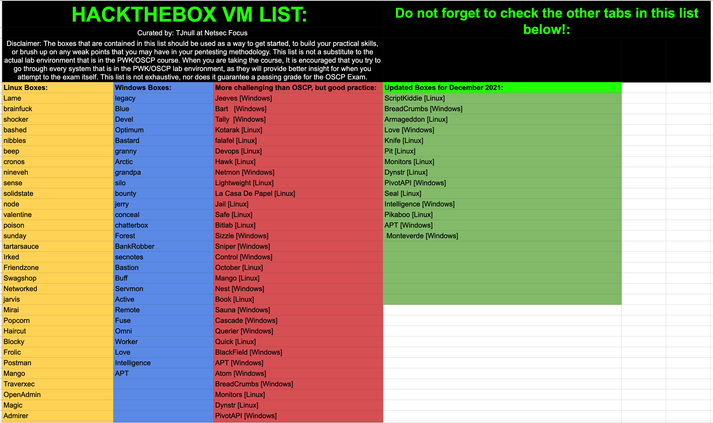</p>
<h3 id="The-Course"><a href="#The-Course" class="headerlink" title="The Course"></a>The Course</h3><p>The virtual lab environment is shared with all the PEN200-OSCP students. Don’t for get to join the official Discord server, you can find the invitation link in <a target="_blank" rel="noopener" href="https://portal.offensive-security.com/">https://portal.offensive-security.com/</a>.</p>
<p>You could learn a lot of knowledge about peneration with PEN200 course, such as information gathering, using the exploit, and the privilege escalation. In the exam or during the study, both the Windows and Linux will be met.</p>
<p>The most import for the PEN200-OSCP are enumeration and exploitation. With the scanning result, find the suitable exploit with  search engines(Google, Github, etc.)</p>
<p>If you make a personal cheatsheet when you are reading the teaching material or exercising in the virtual lab environment, it will help you save a lot of time in penetration in the exam and lab.</p>
<h4 id="The-Lab"><a href="#The-Lab" class="headerlink" title="The Lab"></a>The Lab</h4><p>Although there are 850+ pages in the PDF, because learning the penetration needs a lot of practice, the lab is the core part of the PEN200 course.</p>
<p>Most machines can be solved independently, but there are dependencies between some machines. You need to attack another machine first and obtain enough information in Post-Enumeration to break through another machine.</p>
<p>You can find the relevance between the amount of compromised machines in lab and the pass rate in a offical passage. The passage introduced the lab environment in detail, incluing the network topology.</p>
<blockquote>
<p> <a target="_blank" rel="noopener" href="https://www.offensive-security.com/offsec/pwk-labs-success/">A Path to Success in the PWK Labs | Offensive Security (offensive-security.com)</a></p>
</blockquote>
<p>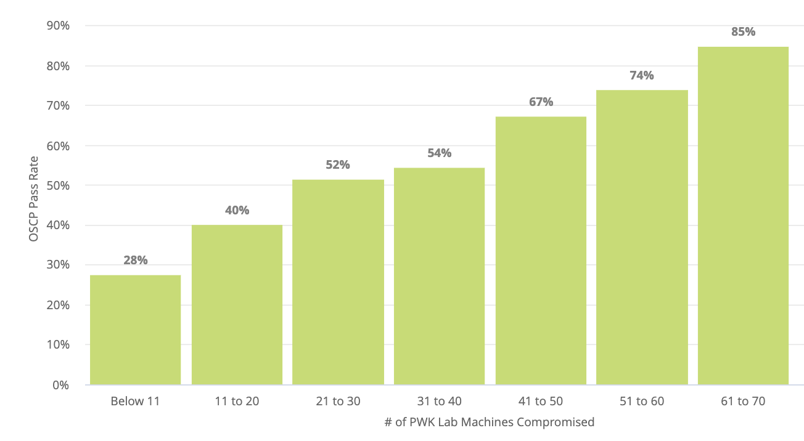</p>
<h4 id="The-newly-added-requirement-in-exam-Active-Directory"><a href="#The-newly-added-requirement-in-exam-Active-Directory" class="headerlink" title="The newly added requirement in exam: Active Directory"></a>The newly added requirement in exam: Active Directory</h4><p>Chapter 21 of the PEN200 course has talked all the content about AD which will be used in the exam. In my opinion, It is enough to pass the exam(AD part) with these knowledge. Apart from this, there is a detailed example about how to exploit the AD in the last chapter of the course. There are some exercises in lab, too.</p>
<p>Although I didn’t take the OSCP exam with AD, I have taken the OSEP exam which is full of examinations for AD. It’s not too hard to master this technology. What you need is just to have a full understanding of the content taught in the course and finish the exercises in the lab.</p>
<blockquote>
<p>You can ask in the discord official server about what is the IP of AD-associated machines.</p>
</blockquote>
<h3 id="About-the-new-exam"><a href="#About-the-new-exam" class="headerlink" title="About the new exam"></a>About the new exam</h3><blockquote>
<p>Offical Exam GUIDE: <a target="_blank" rel="noopener" href="https://help.offensive-security.com/hc/en-us/articles/360040165632-OSCP-Exam-Guide">OSCP Exam Guide – Offensive Security Support Portal (offensive-security.com)</a></p>
</blockquote>
<p>Because the structure of exam has changed a lot, talking about my exam review doesn’t make sense. I do suggest every student read some exam reviews posted in 2022 or later.</p>
<p>The changing about the exam has been introduced by the official in this passage: <a target="_blank" rel="noopener" href="https://www.offensive-security.com/offsec/oscp-exam-structure/">https://www.offensive-security.com/offsec/oscp-exam-structure/</a></p>
<p>As we can see, the examination about buffer overflow becomes optional from necessary, the examination about Active Directory becomes required from never taking.</p>
<h2 id="The-OSCE3-General-Information"><a href="#The-OSCE3-General-Information" class="headerlink" title="The OSCE3 - General Information"></a>The OSCE3 - General Information</h2><p>After the OSCP, the following I will talk about is the 3 certifications consisted the OSCE3. They are more difficult and have higher demand to pass the exam.</p>
<p>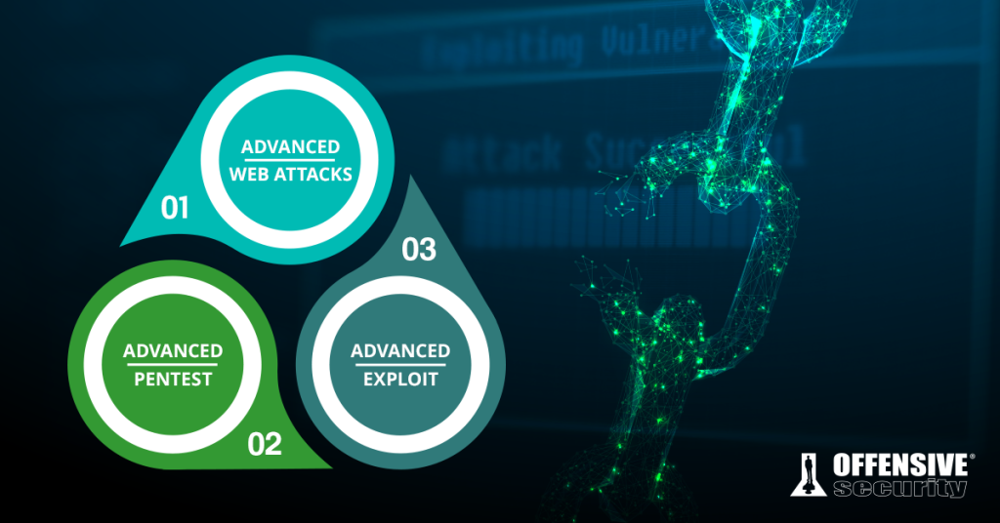</p>
<ul>
<li>The WEB300-OSWE mainly examines white-box code assessment.</li>
<li>The PEN300-OSEP mainly examines pentest with Active Directory and anti-virus bypassing. </li>
<li>The EXP301-OSED mainly  examines exploit development with Windows x86. (Binary Security)</li>
</ul>
<h3 id="Horizontal-comparison-in-the-OffSec-300-series"><a href="#Horizontal-comparison-in-the-OffSec-300-series" class="headerlink" title="Horizontal comparison in the OffSec 300 series"></a>Horizontal comparison in the OffSec 300 series</h3><p>Although each one of them focuses on a different field, there still are some differences independent from technology.</p>
<ul>
<li>WEB300-OSWE - The oldest one, the most difficult one in thinking, maybe it’s caused by the updating year by year.<ul>
<li>However, it’s the easiest for me bacaue of my strong foundation of web security.</li>
</ul>
</li>
<li>EXP301-OSED - The latest one, the most difficult one in general, maybe it’s prejudice because fewer people are working on binary security than web security.</li>
<li>PEN300-OSEP - Generally, it is thought of as the easiest one of the three, I think it is because of the lower requirement of coding.<ul>
<li>However, there is a lot of coding in need during learning the course. </li>
</ul>
</li>
</ul>
<h2 id="PEN300-OSEP"><a href="#PEN300-OSEP" class="headerlink" title="PEN300-OSEP"></a>PEN300-OSEP</h2><blockquote>
<p>Official information about the PEN300-OSEP: <a target="_blank" rel="noopener" href="https://www.offensive-security.com/pen300-osep/">https://www.offensive-security.com/pen300-osep/</a></p>
</blockquote>
<p>I has owned the OSEP in August 2021, it is the next part of OSCP, focuses on Lateral Movement, Peneration with Active Directory and Anti-Virus Bypassing. It also offers content about fishing and is closer to red teaming.</p>
<h3 id="How-to-prepare-1"><a href="#How-to-prepare-1" class="headerlink" title="How to prepare"></a>How to prepare</h3><p>The courses in the 300 series are recognized by OffSec as advanced courses, all of which require more or less development capabilities. The official page also gives the requirements for basic capabilities, as follows</p>
<p>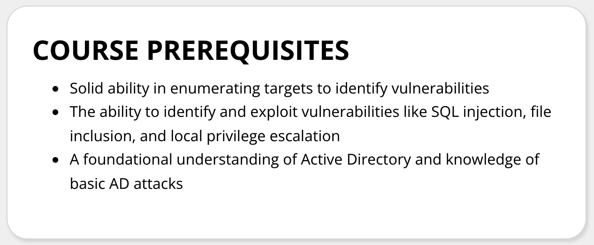</p>
<p>Apart from the official prerequisites, in my opinion, owning capability as below could benefit your learning or help you during the exam.</p>
<ul>
<li>Proficient in Powershell, especially able to invoke .Net Framework with PowerShell</li>
<li>Proficient in C# and advanced language features, especially the <strong>reflection</strong></li>
<li>Solid ability in calling Windows API, able to call Windows API with C#</li>
<li>Understanding of Microsoft’s Products such as Microsoft SQL Server and ASP.NET</li>
</ul>
<p>The syllabus: <a target="_blank" rel="noopener" href="https://www.offensive-security.com/documentation/PEN300-Syllabus.pdf">PEN-300-Syllabus (offensive-security.com)</a></p>
<p>If you have plenty of time, you could preview each knowledge point following the syllabus, which is also a good choice.</p>
<p>Since such an intranet practice environment composed of multiple targets is still relatively rare, I didn’t take any extra exercise. If you want, just choose by yourself.</p>
<p>Although I mentioned that OSEP has the lowest development capability requirements in the 300 series certification, why do I still recommend that you master PowerShell and C#? This is because the course will provide in-depth explanations for the various techniques used, including what each line does and how to modify it yourself. Although you can directly save the template code and apply it directly to the exam, I think that it is the most important thing to understand the principles in the course, otherwise you will still be an advanced script kid.</p>
<h3 id="About-the-Course"><a href="#About-the-Course" class="headerlink" title="About the Course"></a>About the Course</h3><p>The resources of the course are mostly the same as the one of PEN200, but there is a significant difference between the PEN200 Lab and the PEN300 Lab. In the lab of PEN200, every mahines is a individual challenge, but in the lab of PEN300, the most important is Lateral Movement and Penetration with Active Directory, there are several challenges which are consisted of many machines, it can be as little as three or as many as 10. Each machine  has different solution to break, such as fishing, lateral movement, SQL vulnerabilities, etc.</p>
<p>By the way, it’s not the same as PEN200, the lab environment for the 300 series is not shared with other students.</p>
<p>The exam focuses on the ability to examine 4 areas, and it is also where we should focus on learning</p>
<ul>
<li>Lateral Movement ( Including traversing between multiple network segments )</li>
<li>Penetration with Active Directory</li>
<li>Anti-Virus Bypassing ( Mainly based on static bypassing )</li>
<li>Client Side Code Execution ( Such as fishing)</li>
</ul>
<p>Compare to PEN200-OSCP, PEN300-OSEP is closer to penetration in the real world. You will find that the antivirus software is working in nearly every machine, but working offline. After gaining administrator privileges, you also need to find a way to disable or bypass these security software, otherwise they will not only hinder you in the stage of obtaining a shell, but also when you perform lateral movement or post-enumeration.</p>
<h3 id="About-the-Exam"><a href="#About-the-Exam" class="headerlink" title="About the Exam"></a>About the Exam</h3><blockquote>
<p>Offical Exam GUIDE: <a target="_blank" rel="noopener" href="https://help.offensive-security.com/hc/en-us/articles/360050293792-OSEP-Exam-Guide">OSEP Exam Guide – Offensive Security Support Portal (offensive-security.com)</a></p>
</blockquote>
<p>Many students learned about OffSec’s certification system only because of the OSCP certification. Compared with other certifications, the examination format of the OSCP certificate is quite unique, while the OSEP adopts a more interesting examination form.</p>
<p>In the OSEP exam, we still need to attack each target machine because we are still being examined for penetration testing, but this time we are provided with a simulated environment. OffSec simulates a fictitious target, such as  a large company or a bank. The exam provides students with several IPs as exposed security boundary. You can break through in many ways. You can break the security boundary by attacking Web services, exploiting directly, or even phishing.</p>
<p>After breaking the security boundary, it’s time to move laterally. Every time you owned a <code>proof.txt</code> or <code>local.txt</code>, you will get 10 points. There are two ways to pass the exam, get 10 flags, that is, 100 points to pass the exam, or finish the ultimate goal of the simulation, the flag is saved in secret.txt, and you can pass the exam directly after getting <code>secret.txt</code></p>
<p>According to the official statement, there are at least two attack paths that can reach <code>secret.txt</code>, which means that either one of the paths is completed, or both paths are almost halfway through, which is relatively flexible, and everyone can choose freely during the exam.</p>
<p>During my exam, because the security software in the machine which is in the boundary of another route can’t be bypassed for me, I have to try to get the <code>secret.txt</code> from the way I can break. Luckily, I got the <code>secret.txt</code> and successfully passed the exam. It also passed through more than one network segment. The OSEP exam is so interesting for me.</p>
<p>All the technologies used in the OSEP exam have been mentioned in the lab challenges, so I think that as long as you solved all the challenges in the lab like me and master every knowledge point, passing the exam will not be a problem.</p>
<h2 id="WEB300-OSWE"><a href="#WEB300-OSWE" class="headerlink" title="WEB300-OSWE"></a>WEB300-OSWE</h2><blockquote>
<p>Official information about the WEB300-OSWE: <a target="_blank" rel="noopener" href="https://www.offensive-security.com/awae-oswe">https://www.offensive-security.com/awae-oswe</a></p>
</blockquote>
<p>I has owned the OSWE in April 2021, it’s the first certification about exploit development.</p>
<h3 id="How-to-Prepare"><a href="#How-to-Prepare" class="headerlink" title="How to Prepare"></a>How to Prepare</h3><p>The courses in the 300 series are recognized by OffSec as advanced courses, all of which require more or less development capabilities. The official page also gives the requirements for basic capabilities, as follows</p>
<p>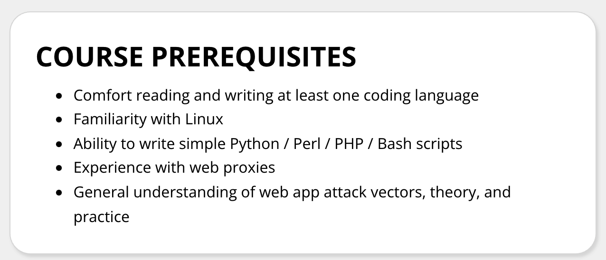</p>
<p>As we can see, the requirements for the basics of web coding are relatively high. If you’re a experienced CTF-Web palyer, it’s will be easy.</p>
<p>However, the WEB300-OSWE focuses on white-box assessment, which is diffrent from CTF.</p>
<p>If you’re not a CTF player and don’t have knowledge about web security. I recommend the basic course by PortSwigger, which is free.</p>
<p><a target="_blank" rel="noopener" href="https://portswigger.net/web-security/all-materials">https://portswigger.net/web-security/all-materials</a></p>
<p>The Syllabus of WEB300-OSWE: <a target="_blank" rel="noopener" href="https://www.offensive-security.com/documentation/awae-syllabus.pdf">awae-syllabus.pdf (offensive-security.com)</a></p>
<p>If you have looked at it in detail, you can find that most of the course are based on real examples. Both WEB300 and EXP301 are used to study Exploit Development (EXP development), so you will study with real example. If you have mastered the above programming basics and Web vulnerabilities. It’s time to start the journey of WEB300-OSWE officially.</p>
<h3 id="About-the-Course-1"><a href="#About-the-Course-1" class="headerlink" title="About the Course"></a>About the Course</h3><p>The resources of the course are mostly the same as the one of PEN200.</p>
<p>The lab is consisted of several chanllenges, which is consist of white-box(main) and black-box, but the exam only examines the white box assessment.</p>
<p>The way of learning the WEB300-OSWE course is relatively monotonous. The method I used to learn it is to practice while reading the PDF. After practicing all the examples in the course, I have mostly mastered it. This may be because I was a player in CTF-Web. Due to my experience, this course is not very difficult for me</p>
<p>As follwoing, we need to solve the challenges in the lab. It may be too hard for those student who don’t have experience with web assessment, don’t be hesitate to ask others for help in discord. As long as the vulnerability taught in the course can be tested, including client-side attacks like CSRF or collision attacks.</p>
<p>For both WEB300-OSWE and EXP301-OSED, I strongly recommend summarizing mind maps while studying, which is extremely helpful for consolidating study and thinking about attack paths in exams</p>
<h3 id="About-the-Exam-1"><a href="#About-the-Exam-1" class="headerlink" title="About the Exam"></a>About the Exam</h3><p>The exam examines manual white-box auditing, so you are not allowed to use various automated tools. Each challenge will provide 2 machines. The 2 machines are exactly the same except for the passwords. One is used for students to obtain source code and Analysis, another used to get the Proof.</p>
<p>For every challenge, there will be 2 stages, first one is to bypass login, the others is to achieve remote code execution.</p>
<p>The full score of the exam is 100 points, and 85 points are passed. There are 2 machines in total, 35 points in the first stage and 15 points in the second stage, which means that the Bypass Login of the two machines must be successful, and RCE only needs to complete one of them. Because I had a lot of spare time for the exam, it took less than 20 hours to get the full score and write the report, so I got it all done.</p>
<p>After getting all the Proofs, The student have to write an Exploit to automate the attack. I recommend using Python3 to write exploit scripts.</p>
<p>Compared with the course that use real cases as examples, the exam is consisted of OffSec’s self-developed challenges, and the code language used in exam is different for everyone.</p>
<h2 id="EXP301-OSED"><a href="#EXP301-OSED" class="headerlink" title="EXP301-OSED"></a>EXP301-OSED</h2><blockquote>
<p>Official information about the EXP301-OSED: <a target="_blank" rel="noopener" href="https://www.offensive-security.com/exp301-osed/">https://www.offensive-security.com/exp301-osed/</a></p>
</blockquote>
<h3 id="How-to-Prepare-1"><a href="#How-to-Prepare-1" class="headerlink" title="How to Prepare"></a>How to Prepare</h3><p>The courses in the 300 series are recognized by OffSec as advanced courses, all of which require more or less development capabilities. The official page also gives the requirements for basic capabilities, as follows</p>
<p>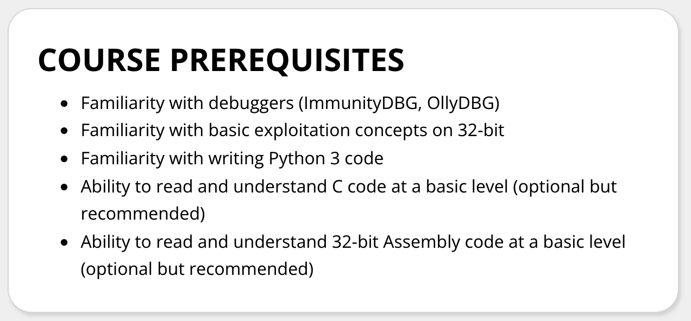</p>
<p>EXP301-OSED only examines the 32-bit environment of Windows, that is why it is being criticized, because most of the computers are now <code>x64</code> architecture. However, in fact <code>x86_64</code> is an upgraded version of the <code>x86</code> architecture. I think it’s a good choice to learn basic binary research skills by learning x86. If you start directly with <code>x64</code>, the learning curve will be too bumpy</p>
<p>In order to be familiar with the 32-bit basic binary exploit, you can choose the CTF-PWN as the entry option, or you can choose the practice questions provided by the <a target="_blank" rel="noopener" href="https://ropemporium.com/">ROP Emporium</a> for practice, because this website only provides executables, there is no virtual practice environment. You can use a virtual machine to build a virtual practice environment. Here I recommend a small tool I made myself to build a practice environment. The documentation is on my blog: <a href="/Docs/DIPD-Document/">DIPD Document - 4xpl0r3r’s blog</a>, you can also leave a message below the article about usage issues.</p>
<p>ROP Emporium offers 4 practice architectures for each challenge, <code>x86</code>, <code>x86_64</code>, <code>ARMv5</code>, <code>MIPS</code>, if you are only preparing for EXP301-OSED, you only need to practice the challenges in <code>x86</code> architecture, if you want to feel  the difference between <code>x86</code> and modern <code>x86_64</code>, you can also practice with <code>x86_64</code>, if you want to enter the IoT binary security field, you can study <code>ARM</code> and <code>MIPS</code>, but you need to build a QEMU heterogeneous virtual machine yourself.</p>
<h3 id="About-the-Course-2"><a href="#About-the-Course-2" class="headerlink" title="About the Course"></a>About the Course</h3><p>The resources of the course are mostly the same as the one of PEN200.</p>
<p>The learning method I used in the EXP301-OSED course is similar to WEB300-OSWE. My learning method is to practice while reading PDF. After practicing all the examples in the course, I have mostly mastered it. Through repeated practice, I summarized my own methodology.</p>
<p>As same as the WEB300-OSWE, it is recommanded to summarize mind maps during learning the EXP3-1-OSED.</p>
<p>I concluded that the core content of EXP301-OSED is: stack overflow as the core, study the bypass of DEP and ASLR, and learn the shellcode development with assembly and reverse engineering. These are also the core content in the exam, so you can have a general understanding before taking the course.</p>
<p>There are also some small details that need to be paid attention to. The OSED exam allows the use of IDA but not IDA Pro. Only the free version of IDA can be used, which means that the IDA can be only used for disassembly and you can get the pesudo-code by IDA F5. Attention: Debugging is also only possible with WinDbg</p>
<h3 id="About-the-Exam-2"><a href="#About-the-Exam-2" class="headerlink" title="About the Exam"></a>About the Exam</h3><p>Compared with in course and lab, which generally use real cases as examples, the exams all use challenges developed by OffSec.</p>
<p>The exam consists of three independent assignments, with scores of 40, 30, and 30, respectively. The score for passing the exam is 60, so you can pass the exam by completing 2 of the assignments.</p>
<p>The 3 tasks of the exam will examine all topics in the syllabus, including reverse engineering, developing exploits to bypass mitigation (i.e. DEP and ASLR), and developing self-made shellcode (developed in assembly language)</p>
<p>Compared with the difficulty of thinking, this exam pays more attention to the understanding of the underlying computer, it will be very difficult for students who are not familiar with assembly language, because the amount of code to be read is still not small, most of the challenges are relatively straightforward, and the more creative part I think is building the ROP chain and reverse engineering to find exploitable vulnerability.</p>
<p>Every assignment is pretty binary as far as I know, if you have the flag and good docs, it is max score for that challenge, but if any of these is missing, I guess it is 0.</p>
<p>Some chanllenges will provide a template exploit, which needs to be further improved, while some chanllenges do not have a template, and need to find vulnerability through reverse engineering</p>
<p>There are some important to pay attention</p>
<ul>
<li>You have to use IDA Freeware to perform disassembly, neither IDA Pro and Ghidra are allowed.</li>
<li>The exploit have to be written by Python3, neither other languages and Python2 are allowed.</li>
<li>Unlike other OffSec certifications that only need to upload the report and do not need to upload the code, OSED needs to upload the final code of each assignment</li>
</ul>
<h2 id="The-End"><a href="#The-End" class="headerlink" title="The End"></a>The End</h2><p>If the information you want to know is not mentioned in this article, you are welcome to send me an email to communicate, and you are also welcome to be my online friend, just send me your contact information by email.</p>
<p><a href="mailto:&#52;&#x78;&#x70;&#108;&#48;&#114;&#51;&#114;&#x40;&#103;&#109;&#x61;&#x69;&#108;&#46;&#99;&#111;&#x6d;">&#52;&#x78;&#x70;&#108;&#48;&#114;&#51;&#114;&#x40;&#103;&#109;&#x61;&#x69;&#108;&#46;&#99;&#111;&#x6d;</a></p>
<p>Here are my certifications</p>
<p>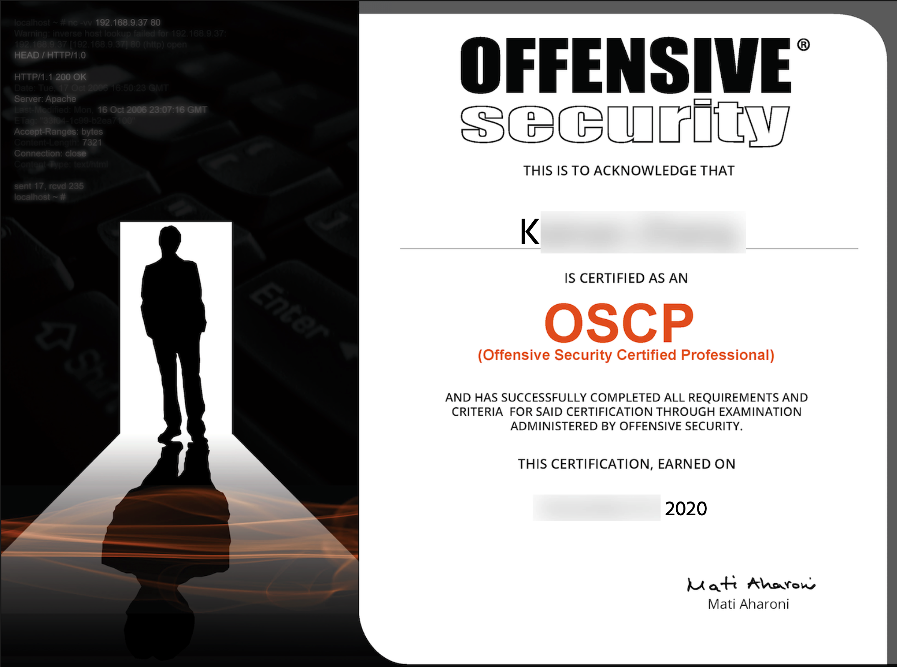</p>
<p>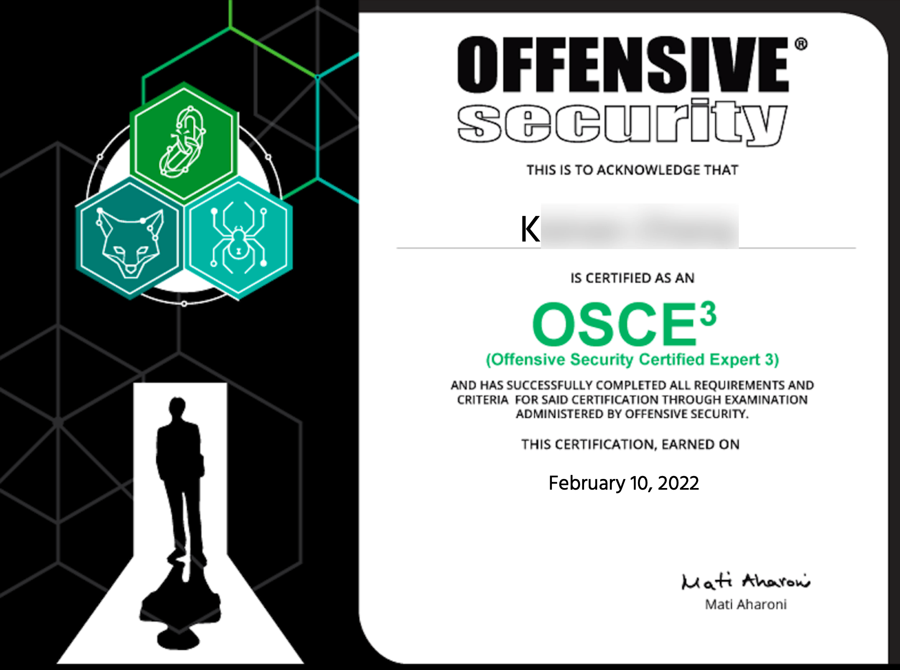</p>
<p>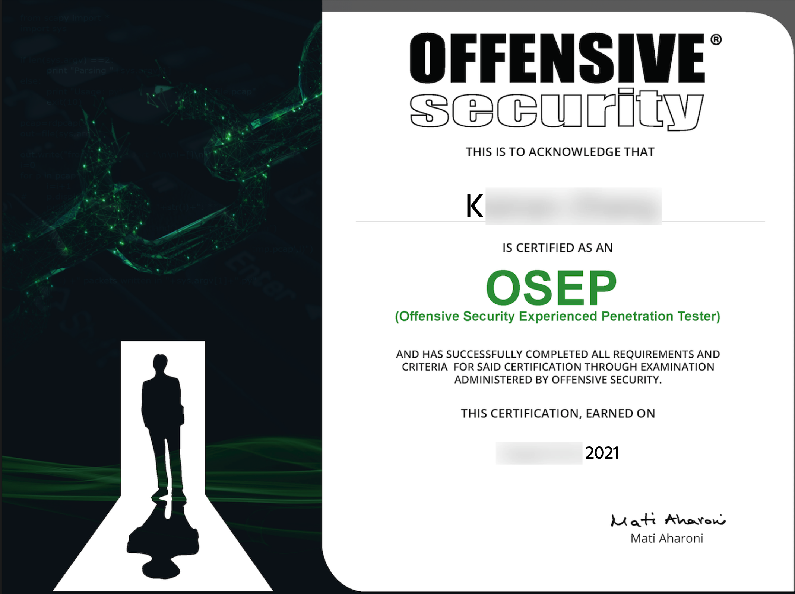</p>
<p>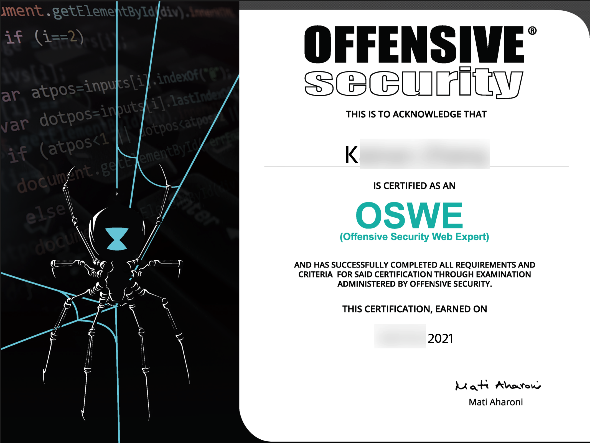</p>
<p>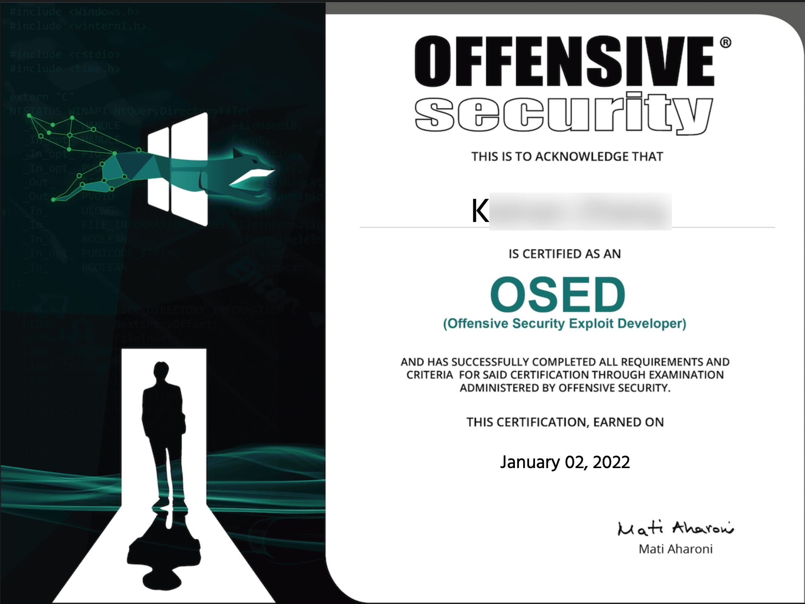</p>
</div><div class="article-licensing box"><div class="licensing-title"><p>OSCE3 Review (OSCP+OSEP+OSWE+OSED)</p><p><a href="https://www.4xpl0r3r.com/Certifications/OSCE3-Review-OSCP-OSEP-OSWE-OSED/">https://www.4xpl0r3r.com/Certifications/OSCE3-Review-OSCP-OSEP-OSWE-OSED/</a></p></div><div class="licensing-meta level is-mobile"><div class="level-left"><div class="level-item is-narrow"><div><h6>Author</h6><p>4xpl0r3r</p></div></div><div class="level-item is-narrow"><div><h6>Posted on</h6><p>2022-01-27</p></div></div><div class="level-item is-narrow"><div><h6>Updated on</h6><p>2023-07-21</p></div></div><div class="level-item is-narrow"><div><h6>Licensed under</h6><p><a class="icons" rel="noopener" target="_blank" title="Creative Commons" href="https://creativecommons.org/"><i class="icon fab fa-creative-commons"></i></a><a class="icons" rel="noopener" target="_blank" title="Attribution" href="https://creativecommons.org/licenses/by/4.0/"><i class="icon fab fa-creative-commons-by"></i></a><a class="icons" rel="noopener" target="_blank" title="Noncommercial" href="https://creativecommons.org/licenses/by-nc/4.0/"><i class="icon fab fa-creative-commons-nc"></i></a></p></div></div></div></div></div><div class="article-tags is-size-7 mb-4"><span class="mr-2">#</span><a class="link-muted mr-2" rel="tag" href="/tags/OffSec/">OffSec</a></div><!--!--></article></div><!--!--><nav class="post-navigation mt-4 level is-mobile"><div class="level-start"><a class="article-nav-prev level level-item link-muted" href="/Vuln-Analysis/Vulnerability-Analysis-CVE-2021-4034-Linux-Polkit-Privilege-Escalation/"><i class="level-item fas fa-chevron-left"></i><span class="level-item">Vulnerability-Analysis - CVE-2021-4034 Linux Polkit Privilege Escalation</span></a></div><div class="level-end"><a class="article-nav-next level level-item link-muted" href="/Vuln-Analysis/Vulnerability-Analysis-CVE-2021-44228-Log4Shell/"><span class="level-item">Vulnerability Analysis - CVE-2021-44228 Log4Shell</span><i class="level-item fas fa-chevron-right"></i></a></div></nav><div class="card"><div class="card-content"><h3 class="title is-5">Comments</h3><div id="comment-container"></div><link rel="stylesheet" href="https://cdn.jsdelivr.net/npm/gitalk@1.7.2/dist/gitalk.css"><script src="https://cdn.jsdelivr.net/npm/gitalk@1.7.2/dist/gitalk.min.js"></script><script>var gitalk = new Gitalk({
            id: "fefbf8708d40fedc8ba57de9754c07ac",
            repo: "Blog-Comments",
            owner: "4xpl0r3r",
            clientID: "9497fa90b0fed6513d24",
            clientSecret: "355dce85acb10c44d73d459e0087635c3d1404cb",
            admin: ["4xpl0r3r"],
            createIssueManually: false,
            distractionFreeMode: false,
            perPage: 10,
            pagerDirection: "last",
            
            
            enableHotKey: true,
            
        })
        gitalk.render('comment-container')</script></div></div></div><div class="column column-left is-4-tablet is-4-desktop is-4-widescreen  order-1"><div class="card widget" data-type="profile"><div class="card-content"><nav class="level"><div class="level-item has-text-centered flex-shrink-1"><div><figure class="image is-128x128 mx-auto mb-2"></figure><p class="title is-size-4 is-block" style="line-height:inherit;">4xpl0r3r</p><p class="is-size-6 is-block">OSCE3 | OSCP | CTFer</p><p class="is-size-6 is-flex justify-content-center"><i class="fas fa-map-marker-alt mr-1"></i><span>Orange Cyberdefense, Shanghai</span></p></div></div></nav><nav class="level is-mobile"><div class="level-item has-text-centered is-marginless"><div><p class="heading">Posts</p><a href="/archives"><p class="title">7</p></a></div></div><div class="level-item has-text-centered is-marginless"><div><p class="heading">Categories</p><a href="/categories"><p class="title">5</p></a></div></div><div class="level-item has-text-centered is-marginless"><div><p class="heading">Tags</p><a href="/tags"><p class="title">21</p></a></div></div></nav><div class="level is-mobile is-multiline"><a class="level-item button is-transparent is-marginless" target="_blank" rel="noopener" title="Github" href="https://github.com/4xpl0r3r"><i class="fab fa-github"></i></a><a class="level-item button is-transparent is-marginless" target="_blank" rel="noopener" title="Email" href="mailto:4xpl0r3r@gmail.com"><i class="fa fa-envelope"></i></a><a class="level-item button is-transparent is-marginless" target="_blank" rel="noopener" title="RSS" href="/atom.xml"><i class="fas fa-rss"></i></a></div></div></div><div class="card widget" data-type="subscribe-email"><div class="card-content"><div class="menu"><h3 class="menu-label">follow.it</h3><form action="https://api.follow.it/subscription-form/bGV4KzhoNzZNdk0rZ1Q0VDhvWlNucE5UYzFwZzVZZFJBaTdLRWxDRXVlenU2Q0k0SzFVUTA3OWtSSnNNa2NNaHdVNUtyVXFNVXBtUWpTT3VSVlE0ZysrWEdxMTFFQVFnV2tZUksrd0d3a1crVFgyaTBVbUhTRUplZVV3YnVNaDh8VjAxd1dmVEdzVzgvSTZMV3dXK1FHbGhFL2ZTdGl3b0FKeWk0YnZmQ2MyND0=/8" method="post" target="_blank"><div class="field has-addons"><div class="control has-icons-left is-expanded"><input class="input" name="email" type="email" placeholder="Email"><span class="icon is-small is-left"><i class="fas fa-envelope"></i></span></div><div class="control"><input class="button" type="submit" value="Subscribe"></div></div></form></div></div></div><div class="card widget" id="toc" data-type="toc"><div class="card-content"><div class="menu"><h3 class="menu-label">Catalogue</h3><ul class="menu-list"><li><a class="level is-mobile" href="#Introduction"><span class="level-left"><span class="level-item">Introduction</span></span></a></li><li><a class="level is-mobile" href="#PEN200-OSCP"><span class="level-left"><span class="level-item">PEN200-OSCP</span></span></a><ul class="menu-list"><li><a class="level is-mobile" href="#How-to-prepare"><span class="level-left"><span class="level-item">How to prepare</span></span></a></li><li><a class="level is-mobile" href="#The-Course"><span class="level-left"><span class="level-item">The Course</span></span></a><ul class="menu-list"><li><a class="level is-mobile" href="#The-Lab"><span class="level-left"><span class="level-item">The Lab</span></span></a></li><li><a class="level is-mobile" href="#The-newly-added-requirement-in-exam-Active-Directory"><span class="level-left"><span class="level-item">The newly added requirement in exam: Active Directory</span></span></a></li></ul></li><li><a class="level is-mobile" href="#About-the-new-exam"><span class="level-left"><span class="level-item">About the new exam</span></span></a></li></ul></li><li><a class="level is-mobile" href="#The-OSCE3-General-Information"><span class="level-left"><span class="level-item">The OSCE3 - General Information</span></span></a><ul class="menu-list"><li><a class="level is-mobile" href="#Horizontal-comparison-in-the-OffSec-300-series"><span class="level-left"><span class="level-item">Horizontal comparison in the OffSec 300 series</span></span></a></li></ul></li><li><a class="level is-mobile" href="#PEN300-OSEP"><span class="level-left"><span class="level-item">PEN300-OSEP</span></span></a><ul class="menu-list"><li><a class="level is-mobile" href="#How-to-prepare-1"><span class="level-left"><span class="level-item">How to prepare</span></span></a></li><li><a class="level is-mobile" href="#About-the-Course"><span class="level-left"><span class="level-item">About the Course</span></span></a></li><li><a class="level is-mobile" href="#About-the-Exam"><span class="level-left"><span class="level-item">About the Exam</span></span></a></li></ul></li><li><a class="level is-mobile" href="#WEB300-OSWE"><span class="level-left"><span class="level-item">WEB300-OSWE</span></span></a><ul class="menu-list"><li><a class="level is-mobile" href="#How-to-Prepare"><span class="level-left"><span class="level-item">How to Prepare</span></span></a></li><li><a class="level is-mobile" href="#About-the-Course-1"><span class="level-left"><span class="level-item">About the Course</span></span></a></li><li><a class="level is-mobile" href="#About-the-Exam-1"><span class="level-left"><span class="level-item">About the Exam</span></span></a></li></ul></li><li><a class="level is-mobile" href="#EXP301-OSED"><span class="level-left"><span class="level-item">EXP301-OSED</span></span></a><ul class="menu-list"><li><a class="level is-mobile" href="#How-to-Prepare-1"><span class="level-left"><span class="level-item">How to Prepare</span></span></a></li><li><a class="level is-mobile" href="#About-the-Course-2"><span class="level-left"><span class="level-item">About the Course</span></span></a></li><li><a class="level is-mobile" href="#About-the-Exam-2"><span class="level-left"><span class="level-item">About the Exam</span></span></a></li></ul></li><li><a class="level is-mobile" href="#The-End"><span class="level-left"><span class="level-item">The End</span></span></a></li></ul></div></div><script src="/js/toc.js" defer></script></div><div class="card widget" data-type="links"><div class="card-content"><div class="menu"><h3 class="menu-label">Links</h3><ul class="menu-list"><li><a class="level is-mobile" href="https://cn.4xpl0r3r.com/" target="_blank" rel="noopener"><span class="level-left"><span class="level-item">Switch Language - 简体中文</span></span><span class="level-right"><span class="level-item tag">cn.4xpl0r3r.com</span></span></a></li><li><a class="level is-mobile" href="https://github.com/4xpl0r3r" target="_blank" rel="noopener"><span class="level-left"><span class="level-item">GitHub</span></span><span class="level-right"><span class="level-item tag">github.com</span></span></a></li><li><a class="level is-mobile" href="https://medium.com/@4xpl0r3r" target="_blank" rel="noopener"><span class="level-left"><span class="level-item">Medium</span></span><span class="level-right"><span class="level-item tag">medium.com</span></span></a></li></ul></div></div></div><div class="card widget" data-type="categories"><div class="card-content"><div class="menu"><h3 class="menu-label">Categories</h3><ul class="menu-list"><li><a class="level is-mobile" href="/categories/Certifications/"><span class="level-start"><span class="level-item">Certifications</span></span><span class="level-end"><span class="level-item tag">1</span></span></a></li><li><a class="level is-mobile" href="/categories/Docs/"><span class="level-start"><span class="level-item">Docs</span></span><span class="level-end"><span class="level-item tag">1</span></span></a></li><li><a class="level is-mobile" href="/categories/Experience/"><span class="level-start"><span class="level-item">Experience</span></span><span class="level-end"><span class="level-item tag">2</span></span></a></li><li><a class="level is-mobile" href="/categories/Red-Blue/"><span class="level-start"><span class="level-item">Red&amp;Blue</span></span><span class="level-end"><span class="level-item tag">1</span></span></a></li><li><a class="level is-mobile" href="/categories/Vuln-Analysis/"><span class="level-start"><span class="level-item">Vuln-Analysis</span></span><span class="level-end"><span class="level-item tag">2</span></span></a></li></ul></div></div></div><div class="card widget" data-type="recent-posts"><div class="card-content"><h3 class="menu-label">Recents</h3><article class="media"><div class="media-content"><p class="date"><time dateTime="2024-02-29T09:00:00.000Z">2024-02-29</time></p><p class="title"><a href="/Experience/Deal-with-the-network-issue-of-UDP-services-with-Clash-TUN-mode-enabled/">Deal with the network issue of UDP services with Clash TUN mode enabled</a></p><p class="categories"><a href="/categories/Experience/">Experience</a></p></div></article><article class="media"><div class="media-content"><p class="date"><time dateTime="2023-03-13T08:45:43.000Z">2023-03-13</time></p><p class="title"><a href="/Red-Blue/C2-Payload-Hiding-and-Memory-Forensics/">C2 Payload Hiding and Memory Forensics</a></p><p class="categories"><a href="/categories/Red-Blue/">Red&amp;Blue</a></p></div></article><article class="media"><div class="media-content"><p class="date"><time dateTime="2023-02-14T06:24:24.000Z">2023-02-14</time></p><p class="title"><a href="/Experience/Using-CodeQL-to-find-out-Log4j-CVE-2021-44228/">Using CodeQL to find out Log4j CVE-2021-44228</a></p><p class="categories"><a href="/categories/Experience/">Experience</a></p></div></article><article class="media"><div class="media-content"><p class="date"><time dateTime="2022-01-30T03:46:14.000Z">2022-01-30</time></p><p class="title"><a href="/Vuln-Analysis/Vulnerability-Analysis-CVE-2021-4034-Linux-Polkit-Privilege-Escalation/">Vulnerability-Analysis - CVE-2021-4034 Linux Polkit Privilege Escalation</a></p><p class="categories"><a href="/categories/Vuln-Analysis/">Vuln-Analysis</a></p></div></article><article class="media"><div class="media-content"><p class="date"><time dateTime="2022-01-27T14:39:50.000Z">2022-01-27</time></p><p class="title"><a href="/Certifications/OSCE3-Review-OSCP-OSEP-OSWE-OSED/">OSCE3 Review (OSCP+OSEP+OSWE+OSED)</a></p><p class="categories"><a href="/categories/Certifications/">Certifications</a></p></div></article></div></div><div class="card widget" data-type="archives"><div class="card-content"><div class="menu"><h3 class="menu-label">Archives</h3><ul class="menu-list"><li><a class="level is-mobile" href="/archives/2024/02/"><span class="level-start"><span class="level-item">February 2024</span></span><span class="level-end"><span class="level-item tag">1</span></span></a></li><li><a class="level is-mobile" href="/archives/2023/03/"><span class="level-start"><span class="level-item">March 2023</span></span><span class="level-end"><span class="level-item tag">1</span></span></a></li><li><a class="level is-mobile" href="/archives/2023/02/"><span class="level-start"><span class="level-item">February 2023</span></span><span class="level-end"><span class="level-item tag">1</span></span></a></li><li><a class="level is-mobile" href="/archives/2022/01/"><span class="level-start"><span class="level-item">January 2022</span></span><span class="level-end"><span class="level-item tag">3</span></span></a></li><li><a class="level is-mobile" href="/archives/2021/08/"><span class="level-start"><span class="level-item">August 2021</span></span><span class="level-end"><span class="level-item tag">1</span></span></a></li></ul></div></div></div><div class="card widget" data-type="tags"><div class="card-content"><div class="menu"><h3 class="menu-label">Tags</h3><div class="field is-grouped is-grouped-multiline"><div class="control"><a class="tags has-addons" href="/tags/Antivirus-Evasion/"><span class="tag">Antivirus Evasion</span><span class="tag">1</span></a></div><div class="control"><a class="tags has-addons" href="/tags/Blue-Teaming/"><span class="tag">Blue Teaming</span><span class="tag">1</span></a></div><div class="control"><a class="tags has-addons" href="/tags/C/"><span class="tag">C#</span><span class="tag">1</span></a></div><div class="control"><a class="tags has-addons" href="/tags/C-C/"><span class="tag">C&amp;C++</span><span class="tag">1</span></a></div><div class="control"><a class="tags has-addons" href="/tags/C2/"><span class="tag">C2</span><span class="tag">1</span></a></div><div class="control"><a class="tags has-addons" href="/tags/CTF/"><span class="tag">CTF</span><span class="tag">1</span></a></div><div class="control"><a class="tags has-addons" href="/tags/CVE/"><span class="tag">CVE</span><span class="tag">3</span></a></div><div class="control"><a class="tags has-addons" href="/tags/CodeQL/"><span class="tag">CodeQL</span><span class="tag">1</span></a></div><div class="control"><a class="tags has-addons" href="/tags/Environment/"><span class="tag">Environment</span><span class="tag">1</span></a></div><div class="control"><a class="tags has-addons" href="/tags/Format-String/"><span class="tag">Format String</span><span class="tag">1</span></a></div><div class="control"><a class="tags has-addons" href="/tags/JNDI/"><span class="tag">JNDI</span><span class="tag">2</span></a></div><div class="control"><a class="tags has-addons" href="/tags/Java/"><span class="tag">Java</span><span class="tag">2</span></a></div><div class="control"><a class="tags has-addons" href="/tags/Linux/"><span class="tag">Linux</span><span class="tag">1</span></a></div><div class="control"><a class="tags has-addons" href="/tags/Memory-Forensics/"><span class="tag">Memory Forensics</span><span class="tag">1</span></a></div><div class="control"><a class="tags has-addons" href="/tags/Network/"><span class="tag">Network</span><span class="tag">1</span></a></div><div class="control"><a class="tags has-addons" href="/tags/OffSec/"><span class="tag">OffSec</span><span class="tag">1</span></a></div><div class="control"><a class="tags has-addons" href="/tags/PWN/"><span class="tag">PWN</span><span class="tag">1</span></a></div><div class="control"><a class="tags has-addons" href="/tags/PowerShell/"><span class="tag">PowerShell</span><span class="tag">1</span></a></div><div class="control"><a class="tags has-addons" href="/tags/Priv-Escalation/"><span class="tag">Priv-Escalation</span><span class="tag">1</span></a></div><div class="control"><a class="tags has-addons" href="/tags/Red-Teaming/"><span class="tag">Red Teaming</span><span class="tag">1</span></a></div><div class="control"><a class="tags has-addons" href="/tags/Troubleshooting/"><span class="tag">Troubleshooting</span><span class="tag">1</span></a></div></div></div></div></div></div><!--!--></div></div></section><footer class="footer"><div class="container"><div class="level"><div class="level-start"><a class="footer-logo is-block mb-2" href="/">4xpl0r3r</a><p class="is-size-7"><span>&copy; 2024 4xpl0r3r</span>  Powered by <a href="https://hexo.io/" target="_blank" rel="noopener">Hexo</a> &amp; <a href="https://github.com/ppoffice/hexo-theme-icarus" target="_blank" rel="noopener">Icarus</a></p></div><div class="level-end"><div class="field has-addons"><p class="control"><a class="button is-transparent is-large" target="_blank" rel="noopener" title="Creative Commons" href="https://creativecommons.org/"><i class="fab fa-creative-commons"></i></a></p><p class="control"><a class="button is-transparent is-large" target="_blank" rel="noopener" title="Attribution 4.0 International" href="https://creativecommons.org/licenses/by/4.0/"><i class="fab fa-creative-commons-by"></i></a></p></div></div></div></div></footer><script src="https://cdn.jsdelivr.net/npm/jquery@3.3.1/dist/jquery.min.js"></script><script src="https://cdn.jsdelivr.net/npm/moment@2.22.2/min/moment-with-locales.min.js"></script><script src="https://cdn.jsdelivr.net/npm/clipboard@2.0.4/dist/clipboard.min.js" defer></script><script>moment.locale("en");</script><script>var IcarusThemeSettings = {
            article: {
                highlight: {
                    clipboard: true,
                    fold: 'unfolded'
                }
            }
        };</script><script src="/js/column.js"></script><script src="/js/animation.js"></script><a id="back-to-top" title="Back to top" href="javascript:;"><i class="fas fa-chevron-up"></i></a><script src="/js/back_to_top.js" defer></script><!--!--><!--!--><!--!--><script src="https://cdn.jsdelivr.net/npm/cookieconsent@3.1.1/build/cookieconsent.min.js" defer></script><script>window.addEventListener("load", () => {
      window.cookieconsent.initialise({
        type: "info",
        theme: "edgeless",
        static: false,
        position: "bottom-left",
        content: {
          message: "This website uses cookies to improve your experience.",
          dismiss: "Got it!",
          allow: "Allow cookies",
          deny: "Decline",
          link: "Learn more",
          policy: "Cookie Policy",
          href: "https://www.cookiesandyou.com/",
        },
        palette: {
          popup: {
            background: "#edeff5",
            text: "#838391"
          },
          button: {
            background: "#4b81e8"
          },
        },
      });
    });</script><script src="https://cdn.jsdelivr.net/npm/lightgallery@1.6.8/dist/js/lightgallery.min.js" defer></script><script src="https://cdn.jsdelivr.net/npm/justifiedGallery@3.7.0/dist/js/jquery.justifiedGallery.min.js" defer></script><script>window.addEventListener("load", () => {
            if (typeof $.fn.lightGallery === 'function') {
                $('.article').lightGallery({ selector: '.gallery-item' });
            }
            if (typeof $.fn.justifiedGallery === 'function') {
                if ($('.justified-gallery > p > .gallery-item').length) {
                    $('.justified-gallery > p > .gallery-item').unwrap();
                }
                $('.justified-gallery').justifiedGallery();
            }
        });</script><!--!--><!--!--><!--!--><!--!--><!--!--><script src="/js/main.js" defer></script><div class="searchbox"><div class="searchbox-container"><div class="searchbox-header"><div class="searchbox-input-container"><input class="searchbox-input" type="text" placeholder="Type something..."></div><a class="searchbox-close" href="javascript:;">×</a></div><div class="searchbox-body"></div></div></div><script src="/js/insight.js" defer></script><script>document.addEventListener('DOMContentLoaded', function () {
            loadInsight({"contentUrl":"/content.json"}, {"hint":"Type something...","untitled":"(Untitled)","posts":"Posts","pages":"Pages","categories":"Categories","tags":"Tags"});
        });</script></body></html>